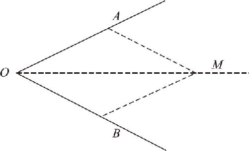
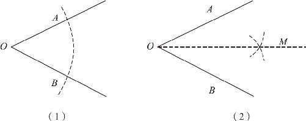
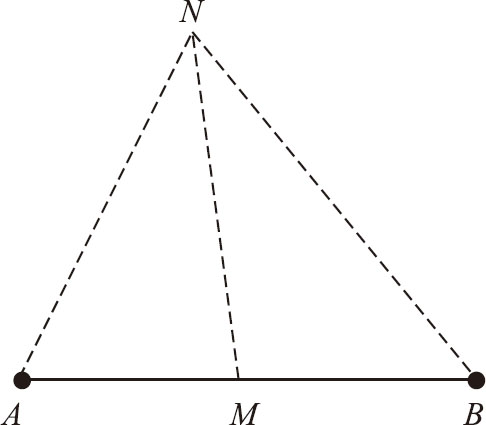
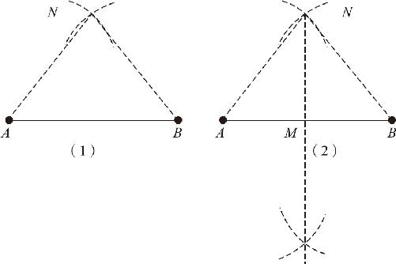
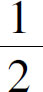
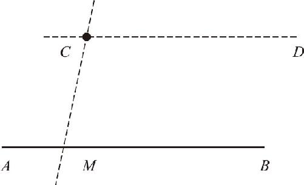
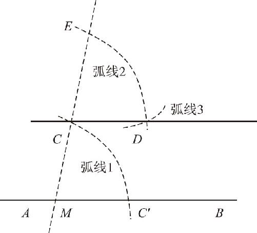

∠AOB
．以上就是利用三边相等的全等定理作角平分线的方法．接下来，我们继续研究寻找线段中点的办法．
∠AOB
．以上就是利用三边相等的全等定理作角平分线的方法．接下来，我们继续研究寻找线段中点的办法．几何学也属于数学，因为它也是离不开加减乘除的．即使我们不知道具体的长度角度，但照样不影响实现加减乘除．通过前面的讨论，我们明白了加减法和乘法，但除法又该怎么办呢？比如，我给你一个线段，让你平分成两半；我给你一个角，让你把它的角平分线画出来．该怎么画呢？
我们要明确一点，在尺规作图的时候，无论要实现的具体内容是什么，都要依据三角形三边对应相等的全等定理．因为这种尺子是没有刻度的，要想分出相等的东西来就必须用图形全等的方式来求；同时，我们还没有量角器，不知道具体角度，因此要想让角度相等，也只能转换为边相等才能实现，因为我们手里的直尺和圆规只能确定长度，不能确定角度．无论是画垂线、画已知角、平分线段还是平分一个角，都只能用三边相等的全等定理，其他定理虽然有很多，但是在尺规作图的问题上都帮不上忙．只要理解了这一点，具体的操作方式就很容易了，下面我们先研究一下角平分线的作法：
题目：给定一个任意大小的角∠O ，求作一条射线OM 平分∠O ．通过前面的分析我们已经知道，作图能借用的只有三边相等的定理．我们假设OM 这条射线已经作出来了（如图6－6所示），由于OM 已经平分了∠O ，所以在我们可以利用的两个全等三角形中，被OM 平分的两个角一定是全等三角形的一组对应角，而OM 本身一定是两个三角形的公用边．为了凑全等三角形三边对应相等的条件，我们不妨假设∠O 的两条边上有两点A 、B ，且OA ＝OB ．现在我们已经凑足了两组对边相等，继续连结MA 和MB 以后，我们发现：要想让△OAM 和△OBM 全等，必须保障AM ＝BM ．而两条边长度相等，同样可以靠圆规帮忙实现．通过上述分析，我们就得到了平分任意角的操作步骤．

图6－6
已知∠O ，求作∠O 的平分线OM ．作法如下：（如图6－7所示）

图6－7
第一步，以O 为圆心，任意长为半径画弧，且交∠O 的两条边于A 、B 两点，这样就保障了OA ＝OB ．
第二步，分别以A 和B 为圆心，以OA 长为半径画弧线，两条弧线相交于M 点，于是也就保障了AM ＝BM ，最后连结OM ，OM 即为所求．
为什么通过这种方法就能保障OM
平分∠AOB
呢？因为在△AOM
和△BOM
中：OA
＝OB
，OM
＝OM
，AM
＝BM
，三边对应相等，所以△AOM
≌△BOM
，因此∠AOM
＝∠BOM
＝
∠AOB
．以上就是利用三边相等的全等定理作角平分线的方法．接下来，我们继续研究寻找线段中点的办法．
如图6－8所示：已知线段AB ，在线段AB 上找一点M ，使MA ＝MB ．通过刚才的讨论，我们知道，要想平分一条线段，也只能借助三角形三边相等的全等定理．按照这个思路，我们可以继续往下分析，假设中点M 点已经作出来了，则有MA ＝MB ，我们现在想利用三角形全等定理，则MA 和MB 一定是两个全等三角形的一组对应边，相对于其中一个三角形而言，我们已经找到两个顶点了，只需要再找到一个顶点就可以了，假设这个顶点是在AB 上方的N 点，那么，当我们分别连结AN 、MN 和BN 以后就会发现，MN 是两个三角形的公用边，又因为MA ＝MB ，因此要想让两个三角形全等，必须使得NA ＝NB ．到此，我们终于明白了，我们要做的，是一条等腰三角形的中线，由于中线也是顶角的角平分线，因此，我们就得出了正确的作图方法：（如图6－9所示）

图6－8

图6－9
第一步，分别以A 、B 为圆心，以大于AB 一半长度为半径画弧，两弧线交于N 点，分别连结NA 和NB ．
第二步，作∠ANB 的角平分线NM ，且交AB 于M 点，M 点即为所求．
需要说明的是，在作∠ANB 的角平分线时，由于AN 和BN 已经是相等的两条线段了，所以，无须在∠ANB 的两条边上重新寻找两个点，只需要分别以A 点和B 点为圆心，以AN 长为半径画弧线即可．那么，由于圆规在画弧线的半径确定后，一直就没有发生过任何变化，所以，我们其实可以更简单地把步骤简化为：分别以A 、B 为圆心，以大于

AB 长为半径画圆，两圆相交于两个交点C 、D ，而后连结C 、D ，交AB 于M 点，M 点即为所求．在作图过程中，我们不难发现，其实M 不仅是AB 的中点，还是一个垂足，因此，该方法作出的直线CD 也是已知线段AB 的中垂线．对比一下角平分线和中垂线的作法，我们不难发现：尺规作图的方法都是大同小异的，无论是角的平分线还是线段的垂直平分线，都是通过三角形全等定理来实现的．下面，我们继续通过这个定理研究一下平行线的作法．
已知直线AB 和AB 上方一点C ，过点C 求作一条直线CD ，使得CD ∥AB ．我们知道，平行线的定义都是靠同旁内角互补来实现的，判定定理又几乎全部都与角度有关，所以我们要想作出平行线，也只能通过角度的帮助．但我们还知道，靠直尺和圆规根本无法直接测量角度，因此又只能利用三边相等的全等定理来保障角的相等，懂得了这两点，基本也就没什么可选的方案了．首先我们必须过点C 作一条直线CM ，而且不出意外的话，这条直线一定会和AB 有交点，假设这个交点就是M ．（为什么一定会有交点呢？如果没交点的话，那不就是一条平行线了吗？）而有了交点就会产生一个角，那么，假设我们作出平行线CD ，CD 自然也会与CM 形成夹角，如果两直线平行，这两个夹角就是同位角关系，一定会相等．（如图6－10）所以，只要过C 点作一个角，使得这个角的大小等于CM 和AB 的夹角就可以了．下面就是完整的作图过程：（如图6－11所示）

图6－10

图6－11
第一步，过C 作直线CM 交AB 于点M ；再以点M 为圆心，CM 长为半径作弧线1，且交AB 于点C′ ，这里实际上是作出了一个等腰三角形CMC′ ，接下去就要根据三边对应相等的定理，在C 点附近复制出一个与此全等的三角形；
第二步，以C 为圆心，CM 长为半径画弧线2，且交MC 延长线于E 点，这个操作就保障了EC ＝CM ；
第三步，以E 点为圆心，CC′ 长为半径画弧线3，且交弧线2于D 点，由于D 点在弧线2上，所以它到C 的距离DC ＝CM ＝C′M ，由于点D 又在以E 点为圆心的弧线3上，所以ED ＝CC′ ，△EDC 和△CC′M 的三条边都是对应相等的，因此必然全等．此时只需连结并延长CD ，直线CD 即为所求．